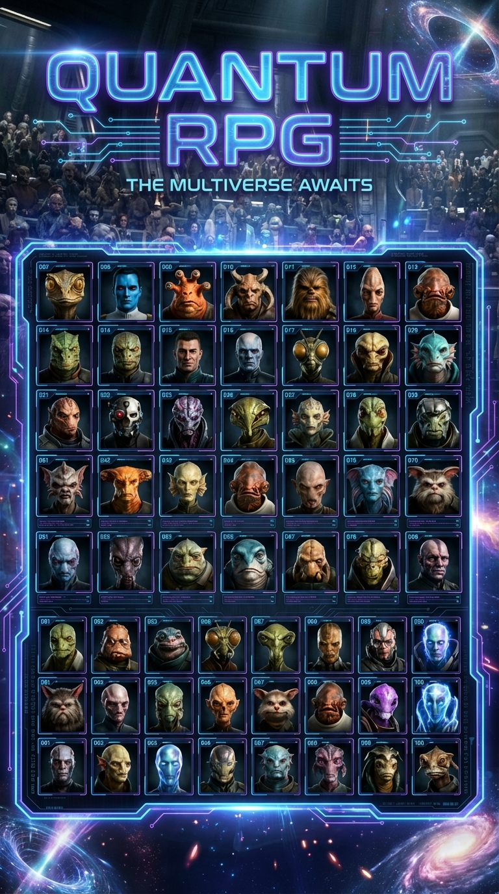
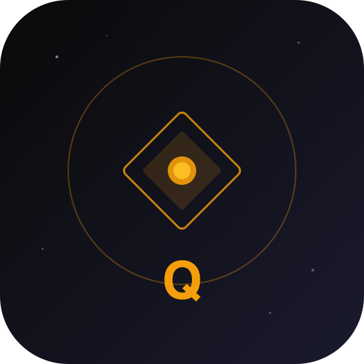
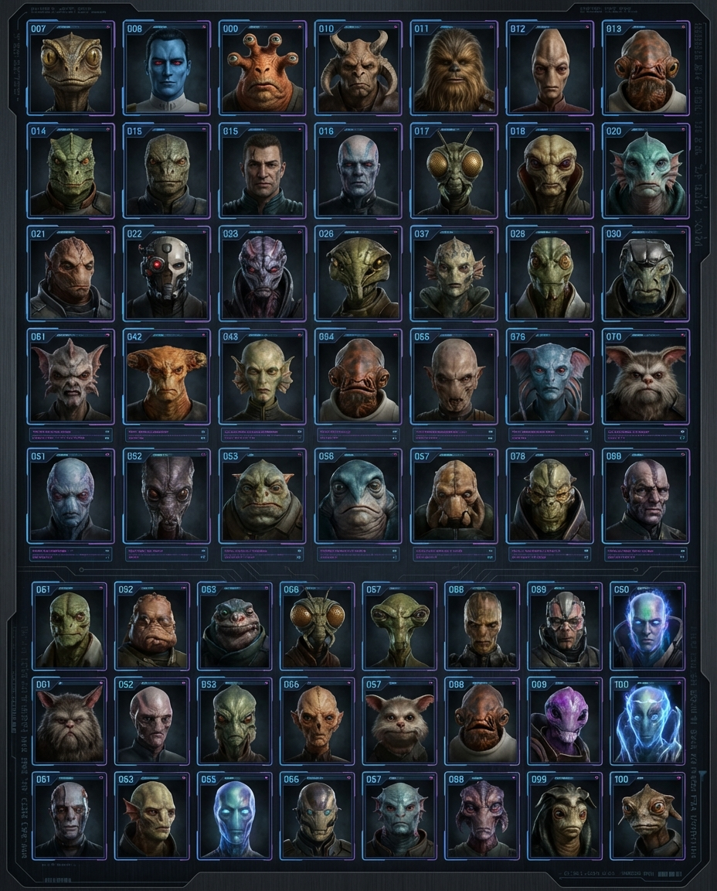
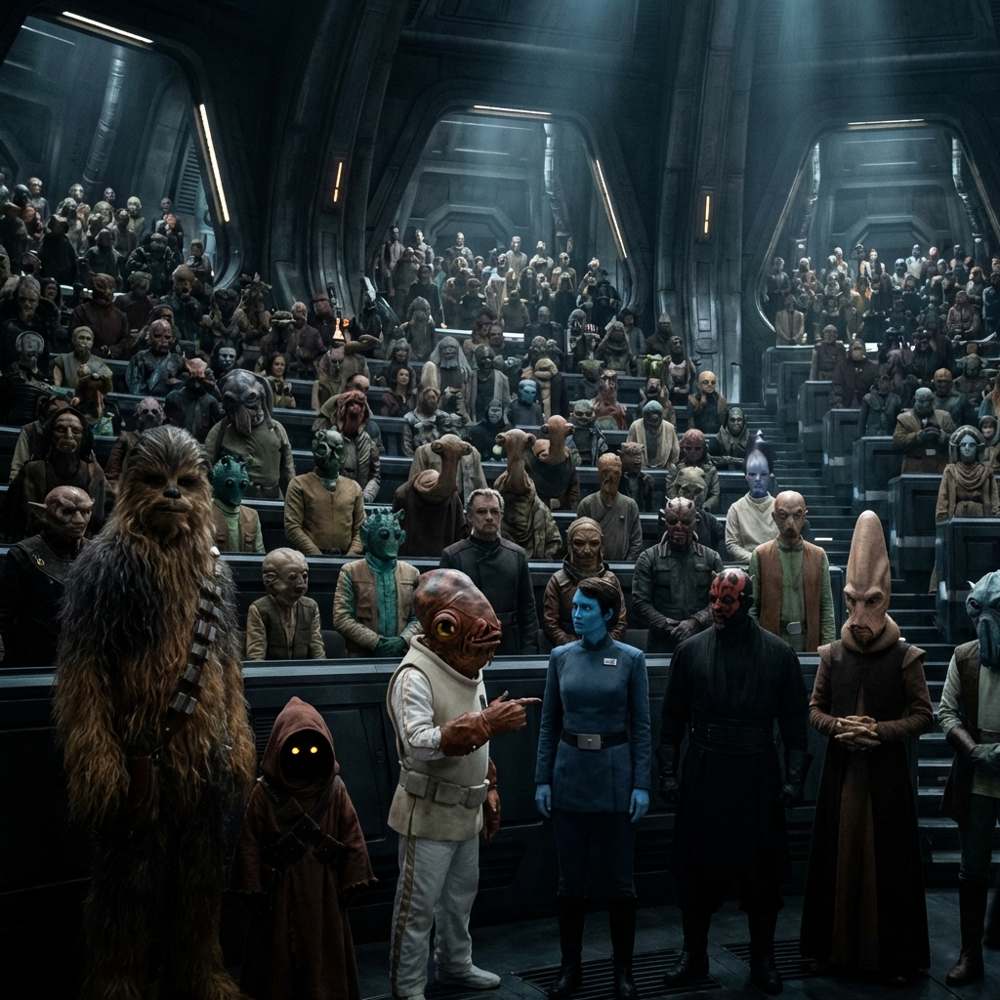

SYSTEM_BRIEFING // 01
WAS
THE QUANTUM UNIVERSE

Ein Star Wars Pen & Paper RPG mit KI Game Master. Erstelle deinen Charakter, würfle dein Schicksal, erlebe epische Abenteuer — alles auf deinem Smartphone.



